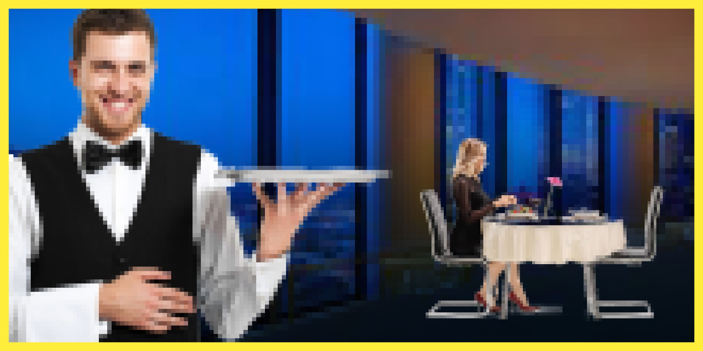

SEI ARRIVATO!
Il cameriere ti accompagna al tavolo... Lei è già qui! Mentre ti avvicini noti che ha qualcosa di insolito... La sua faccia è STRANA, non sembra per niente come in foto!
CHISSENEFREGA
! La perfezione non esiste! La saluti ed iniziate a parlare...